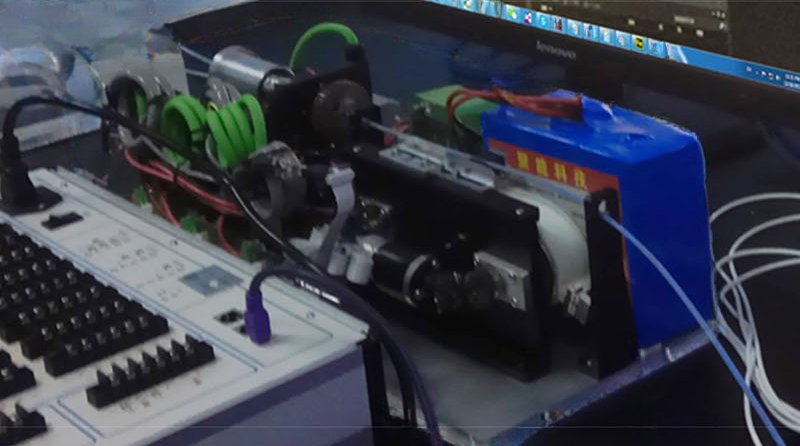

Academic bedside robots · siat_omisore2018
SIAT belt grasper
SIAT second-generation robotic catheter system for cardiovascular intervention (belt-driven graspers)

1 / 3


- Family
- Academic bedside robots (academic)
- Devices
- one 9 Fr, 130 cm unactuated catheter sheath (no steerable catheters)
- Degrees of freedom
- 2 (axial translation, rotation)
- Push
- Belt pinch
- Twist
- Rotating clamp
- Tested up to
- Phantom
- Sim-to-real
- None found — No simulation-trained controller found for this robot.
Testing
- Highest level
- Phantom
- What was tested
- Tubular PVC phantoms (10 mm) from the radial artery to the aortic arch; one insertion with compensation and none without (S8 reading)
- Key numbers
- Backlash gaps 3.94-9.30 mm between motor encoder and tip EM sensor; adaptive neuro-fuzzy compensation final error 0.4 mm (duan2023_progress, review statement); sensor accuracy 0.9 mm / 0.8 deg
Mechanism
- Push (translation)
- belt/track
- Twist (rotation)
- Rotary drive grasper on a Maxon EC16 motor; belt carries four axial drive graspers for continuous push (Maxon EC32)
- Device range
- 9 Fr catheter sheath; two guiding sheaths of 35 mm length, 10 mm inner diameter at the belt ends
- Target anatomy
- radial artery through axillary and subclavian arteries to the aortic arch (tubular phantoms)
Sensing and interface
- Force sensing
- Strain gauges on the 9 Fr sheath, 5 mm and 25 mm from the tip (gauge factor 2.08, 120 ohm), Coulomb friction term subtracted; EM sensor (NDI Aurora) in the lumen for tip motion
- Leader and haptics
- none in this paper
- Imaging
- N.R.
- Sterility
- N.R.
Size
- Footprint (mm)
- 400 x 180 x 150
- Mass (kg)
- about 9.5 (S8 evidence reading of Sec. II-C); battery 10,000 mAh, 220 +/- 27 min
Simulation
- Simulation model
- none found for the robot
- Sim-trained controller
- none found for this generation. The 2024 DRL PID-tuning study (omisore2024_sample, full) ran on the current-generation slave (Sec. II-A: "The current generation is an isomorphic master-slave RCS"; 57 x 22 x 16 cm, 4 DoF), not on this belt-driven robot: see row siat_haptic_duan2025.
Versions
- Lineage
- omisore2018_towards (TBCAS 2018, second generation); the same lab's third-generation isomorphic primary-secondary system (du2024_analyzing, omisore2024_sample, duan2025_development) is row siat_haptic_duan2025; 2011-14: SIAT first-generation master-slave robot (P. Zhang 2011 ICMA; Mi 2014 ICMA) (Alekseeva 2025 Table 2 row 5; Belikov 2024 Fig. 6 MIs; Zhao 2022 Table 1 row 15b) (alekseeva2025_design; belikov2024_evolution; zhao2022_remote)
Sources
- Towards Characterization and Adaptive Compensation of Backlash in a Novel Robotic Catheter System for Cardiovascular Interventions · IEEE Transactions on Biomedical Circuits and Systems, 2018 · doi:10.1109/tbcas.2018.2825359 [omisore2018_towards]
- Technical and Clinical Progress on Robot-Assisted Endovascular Interventions: A Review · Micromachines, 2023 · doi:10.3390/mi14010197 [duan2023_progress]
- The Design of Endovascular Robots for Cardiac Interventions: A Survey · Journal of Field Robotics, 2024 · doi:10.1002/rob.22480 [alekseeva2025_design]
- Evolution and current state of robotic catheters for endovascular surgery: A comprehensive review · Engineering Science and Technology, an International Journal, 2024 · doi:10.1016/j.jestch.2024.101789 [belikov2024_evolution]
- Remote vascular interventional surgery robotics: a literature review · Quantitative Imaging in Medicine and Surgery, 2022 · doi:10.21037/qims-21-792 [zhao2022_remote]
Notes
- Notes
- Fig. 1 of the paper is a CAD model; the setup photo was chosen as the prototype image. F4 2026-10-14: omisore2024_sample removed from this row (it describes the current, isomorphic generation).
This record
- Read level
- full — full (omisore2018 via S8 evidence + figures); omisore2024_sample full text read 2026-10-14 and moved to row siat_haptic_duan2025
- Picture
- omisore2018_towards Fig. 13 (experimental setup, robot outlined in red), TBCAS 2018, doi:10.1109/TBCAS.2018.2825359 ↗ — licence: publisher copyright; grade C
- Picture changes
- native extract (2050x1275 figure, soft source photo); cropped; red outline, red arrow, label box and a yellow leader erased (LaMa, colour mask + boxes); not upscaled
- Found by
- academic: Search of academic bedside robots.
- Data
- JSON · YAML:
records/robots/siat_omisore2018.yaml - Correction
- Suggest a correction [repository not created yet]